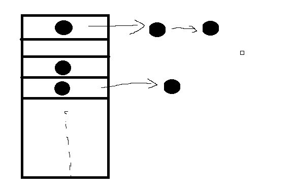

Java的HashMap应该算比较基础的东西，也是最近在看« Redis设计与实现 »，其中也有HashMap的数据结构，又回去看了一下Java本身实现，也就再记录一下。
Map接口实现类
Java数据结构中定义了Map接口，该接口有四个常用实现类：HashMap， Hashtable，LinkedHashMap和TreeMap。
针对上面四个常用类简单的介绍一下：
- Hashtable: 从下面的Java doc就可以看出，其本身是线程安全的，但是并发性不如concurrent中的ConcurrentHashMap，而不需要线程安全时候，也推荐使用HashMap，故可以算是一个遗留类，不推荐使用。
- LinkedHashMap：它是HashMap的一个子类，保存了记录的插入顺序，在用Iterator遍历LinkedHashMap时，先得到的记录肯定是先插入的。
- TreeMap：TreeMap实现SortedMap接口，能够把它保存的记录根据键排序，默认是按键值的升序排序，也可以指定排序的比较器，当用Iterator遍历TreeMap时，得到的记录是排过序的。如果使用排序的映射，建议使用TreeMap。
- HashMap：它根据键的hashCode值存储数据，大多数情况下可以直接定位到它的值，因而具有很快的访问速度，但遍历顺序却是不确定的。 HashMap最多只允许一条记录的键为null，允许多条记录的值为null。HashMap非线程安全，可能会导致数据的不一致。如果需要满足线程安全，可以使用之前提及的ConcurrentHashMap（不建议用Hashtable）。
本篇主要简单介绍的就是HashMap的实现，也是由于HashMap是最最常用的一个，可以满足大部分场景。
内部结构
HashMap内部的数据结构，就是最经典的数组+链表实现的哈希桶（JDK 1.7之前)，从1.8之后，链表节点数量满足一定条件后，会自动转换成红黑树的数据结构，进一步提高查询效率。简单来说，HashMap的结构就是一个指针数组。 
图中的黑点则是存放Key-Value的Node，其数据结构如下：
其中 hash是用来定位数组索引位置， next是链表的下一个node。
主要字段
内部实现
我们以Map.put("key", "value")为例, 看看HashMap的实现
put操作
在不考虑扩容的情况下，put操作会首先计算key的hash值，并通过取高位运算 + 取模运算两步，就能计算出该key在哈希桶的位置了。
当两个key定位在了同一个位置，则表示发生了Hash碰撞。因此，良好的Hash算法，能够尽量减少Hash碰撞，提高Map的存取效率。然而，即使很好的Hash算法，如果哈希桶的size很小（相比于Node数量），无论怎么计算，总是在这几个位置，也会出现很多碰撞。因此，解决碰撞，不仅需要良好的Hash算法，还需要一个良好的扩容机制。
由此可以看出，当put操作使得size > threshold时，HashMap就会发生扩容。 并且从Java doc可以看出，Hash桶的大小一定是2的n次方。（正是这个限制，使得HashMap在扩容和计算key位置的运算效率提升了很多）
hash算法实现
Hash算法的实现，其实只有下面三行代码:
|
|
第二步通过hashCode()的高16位异或低16位实现的：(h = k.hashCode()) ^ (h »> 16)，主要是从速度、功效、质量来考虑的，这么做可以在数组table的length比较小的时候，也能保证考虑到高低Bit都参与到Hash的计算中，同时不会有太大的开销。
第三步也是非常巧妙，因为Lenght是2的n次方，因此length - 1 永远是n个1，其实相当于对hashInt做了一次取模，但是效率极高。
JDK1.8中put实现
line 627-628: table为空则创建.
line 629-630: 计算index，并且check null， 如果为null， 直接创建一个index;
line 633-635: 如果需要put的key和该位置原来的key一样，则直接覆盖value， 否则进行下面的追加操作
line 676-637: 红黑树操作，追加Node到红黑树
line 638-650: 链表操作，追加node到链表，并且判断是否需要转化为红黑树。
line 661-662: 判断是否需要扩容
扩容引起的Infinite Loop
扩容机制里的算法相对也比较复杂，HashMap的线程不安全性，也正是由于扩容时，链表操作可能导致的Infinite Loop引起。因此下一篇再具体举例说明吧。
总结
从源码角度，学习了HashMap的基本数据结构和关键操做的实现，以及简单介绍了扩容机制，由于JDK1.8以后的红黑树，导致扩容的代码更加复杂，但是扩容的算法相对于1.8之前，也有了不少优化。